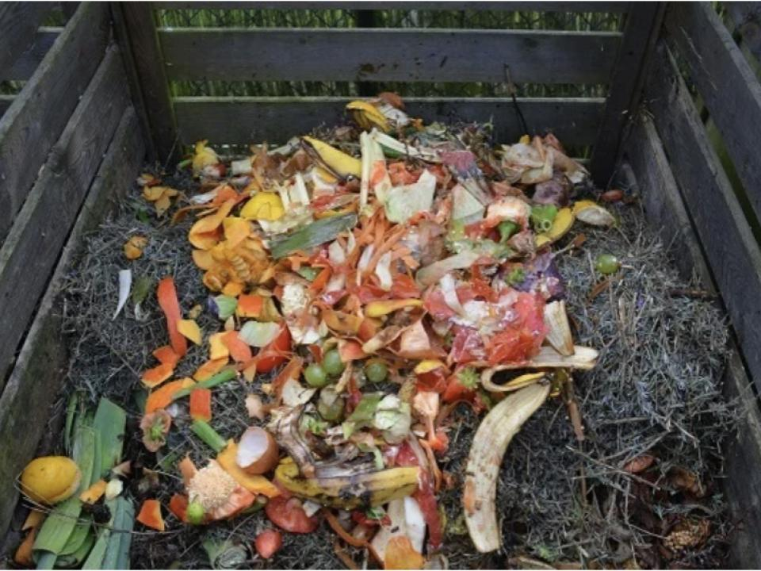
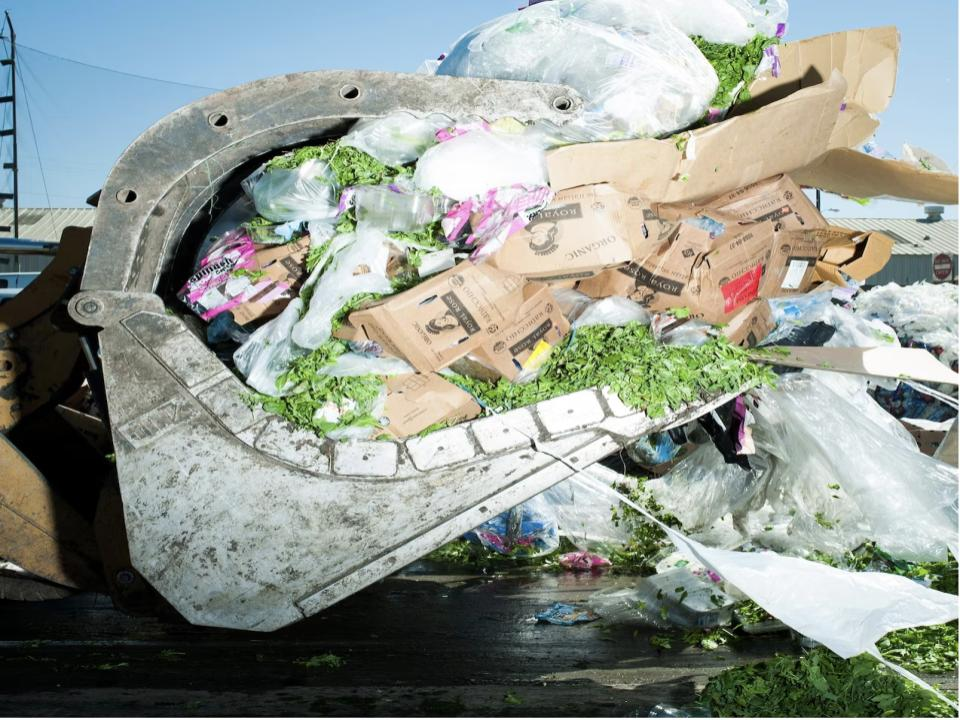
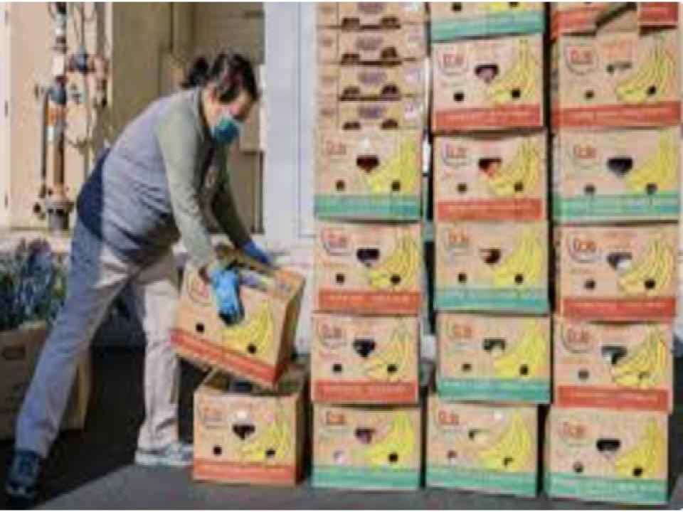

These are some resources that you can use to learn more about food waste

"Food waste occurs along the entire spectrum of production, from the farm to distribution to retailers to the consumer. Reasons include losses from mold, pests, or inadequate climate control; losses from cooking; and intentional food waste."Harvard's article on food waste

"Food waste, that scourge that sends more than a third of our food supply to rot and is a major contributor to climate change, seems like it should be easy to address."National Geographic's article on food waste

"In Seoul, garbage cans automatically weigh how much food gets tossed in the trash. In London, grocers have stopped putting date labels on fruits and vegetables to reduce confusion about what is still edible. California now requires supermarkets to give away — not throw away — food that is unsold but fine to eat."New York Time's article on food waste